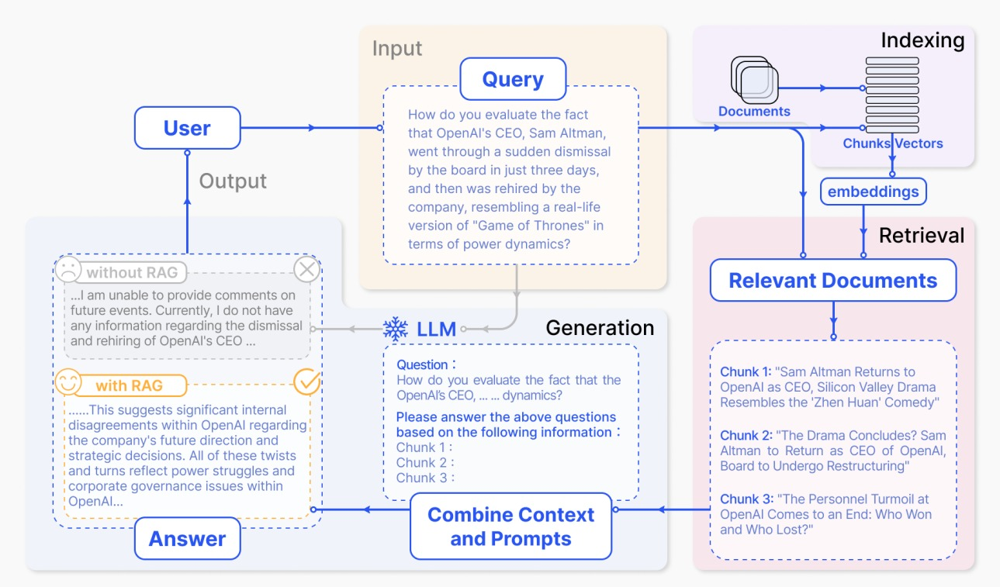
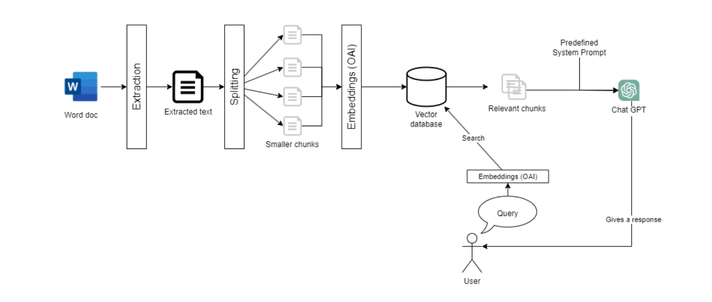
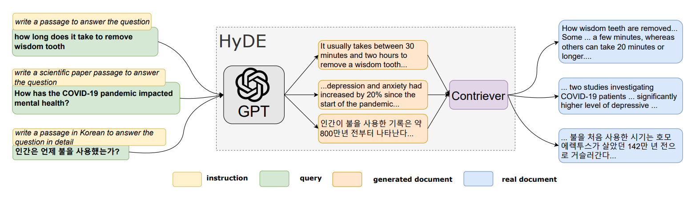

# install required libraries
!pip install PyPDF2
!pip install langchain
!pip install pypdf
!pip install sentence-transformers
!pip install faiss-cpuRetrieval-Augmented Generation(RAG) and Hypothetical Document Embeddings~(HyDE)
NLP
Retrieval-Augmented Generation(RAG) for Large Language Models
Large Language Models (LLMs), such as those driving today’s most advanced AI chatbots and information retrieval systems, are incredibly powerful. However, they’re not without their issues. Here’s a brief overview of what RAG is, the problems it addresses, and how it enhances LLMs:
Current Problems with LLMs:
- Inconsistency: LLMs can sometimes provide accurate answers, but other times they might produce irrelevant or incorrect information.
- Outdated Knowledge: Since LLMs are trained on datasets that may not include the most recent information, their responses can be outdated.
- Lack of Understanding: LLMs process information based on statistical relationships between words, not actual comprehension of content.
What is RAG?
- Augmented Learning: RAG stands for Retrieval-Augmented Generation, an AI framework designed to supplement the internal knowledge of LLMs with external, up-to-date information from various sources.
- Enhanced Accuracy: By grounding LLM responses in external data, RAG improves the relevance, timeliness, and accuracy of the information provided.
How RAG Helps:
- Current, Reliable Facts: RAG ensures LLMs have access to the latest information, making responses more accurate and reliable.
- Transparency: Users can access the sources of information, enabling verification of the LLM’s responses for accuracy and trustworthiness.
- Continuous Updates: The RAG framework allows for the integration of new, relevant data, ensuring LLMs remain up-to-date with the latest knowledge.
By addressing the inherent limitations of LLMs through the integration of external data, RAG significantly enhances the quality and reliability of LLM-generated responses, making this technology a game-changer in the field of AI and machine learning.



from PyPDF2 import PdfReader
from langchain.text_splitter import CharacterTextSplitter
from langchain.vectorstores import FAISS
import os
from langchain.document_loaders import Docx2txtLoader
from langchain.document_loaders import TextLoader
from langchain.document_loaders import PyPDFLoader
from langchain import HuggingFaceHub
from langchain.embeddings import HuggingFaceEmbeddings
from langchain.chains.question_answering import load_qa_chain
import os
os.environ["HUGGINGFACEHUB_API_TOKEN"] = "YOUR_API_TOKEN" # Login to https://huggingface.co/ go to settings > Access Tokens > create a new tokenTaking open source models from hugging face link
llm_small=HuggingFaceHub(
repo_id="google/flan-t5-small",
model_kwargs={"temperature":0.2, "max_length":512}
)
llm_qa=HuggingFaceHub(
repo_id="ashishkat/questionAnswer",
model_kwargs={"temperature":0.2, "max_length":512}
)
llm_xxl=HuggingFaceHub(
repo_id="google/flan-t5-xxl",
model_kwargs={"temperature":0.2, "max_length":512}
)
llm_mistral=HuggingFaceHub(
repo_id="mistralai/Mistral-7B-Instruct-v0.1",
model_kwargs={"temperature":0.1, "max_length":512}
)/usr/local/lib/python3.10/dist-packages/langchain_core/_api/deprecation.py:117: LangChainDeprecationWarning: The class `langchain_community.llms.huggingface_hub.HuggingFaceHub` was deprecated in langchain-community 0.0.21 and will be removed in 0.2.0. Use HuggingFaceEndpoint instead.
warn_deprecated(Without RAG. Direct query to LLM
query = "What is performance of model on detecting brick kilns"
chain = load_qa_chain(llm_mistral, chain_type="stuff")
base_response = chain.run(input_documents=[], question=query)/usr/local/lib/python3.10/dist-packages/langchain_core/_api/deprecation.py:117: LangChainDeprecationWarning: The function `run` was deprecated in LangChain 0.1.0 and will be removed in 0.2.0. Use invoke instead.
warn_deprecated(base_response"Use the following pieces of context to answer the question at the end. If you don't know the answer, just say that you don't know, don't try to make up an answer.\n\n\n\nQuestion: What is performance of modele on detecting brick kilns\nHelpful Answer: The performance of the model on detecting brick kilns can be evaluated by calculating the accuracy, precision, recall, and F1 score. These metrics can be calculated by comparing the predicted results of the model with the actual results. The accuracy measures the percentage of correct predictions, while the precision measures the percentage of true positive predictions among all positive predictions. The recall measures the percentage of true positive predictions among all actual positive cases. The F1 score is the harmonic mean of precision and recall,"split_text = base_response.split("Question:")
question_part = split_text[1].split("Helpful Answer:")
question = question_part[0].strip()
base_answer = question_part[1].strip()
print("Question:", question)
print("Helpful Answer:", base_answer)Question: What is performance of modele on detecting brick kilns
Helpful Answer: The performance of the model on detecting brick kilns can be evaluated by calculating the accuracy, precision, recall, and F1 score. These metrics can be calculated by comparing the predicted results of the model with the actual results. The accuracy measures the percentage of correct predictions, while the precision measures the percentage of true positive predictions among all positive predictions. The recall measures the percentage of true positive predictions among all actual positive cases. The F1 score is the harmonic mean of precision and recall,With RAG. Query to LLM with retrieval
from google.colab import drive
drive.mount('/content/drive')Drive already mounted at /content/drive; to attempt to forcibly remount, call drive.mount("/content/drive", force_remount=True).# # Path to the database 'docs' directory in your Google Drive
# docs_path = '/content/drive/MyDrive/Colab Notebooks/langchain/docs/'# documents = []
# for file in os.listdir(docs_path):
# if file.endswith('.pdf'):
# pdf_path = docs_path + file
# loader = PyPDFLoader(pdf_path)
# documents.extend(loader.load())
# elif file.endswith('.docx') or file.endswith('.doc'):
# doc_path = docs_path + file
# loader = Docx2txtLoader(doc_path)
# documents.extend(loader.load())
# elif file.endswith('.txt'):
# text_path = docs_path + file
# loader = TextLoader(text_path)
# documents.extend(loader.load())
# len(documents)Doing for single pdf
documents = []
loader = PyPDFLoader('/content/drive/MyDrive/Colab Notebooks/langchain/docs/NeurIPS23_Workshop_Accepted_BrickKilns.pdf')
documents.extend(loader.load())
len(documents)11documents[0]Document(page_content='NeurIPS 2023 Workshop on Adaptive Experimental Design and Active Learning in the Real World\nTowards Scalable Identification of Brick Kilns from Satellite\nImagery with Active Learning\nAditi Agarwal, Suraj Jaiswal, Madhav Kanda, Dhruv Patel, Rishabh Mondal,\nVannsh Jani, Zeel B Patel, Nipun Batra\nIndian Institute of Technology, Gandhinagar\nSarath Guttikunda\nUrban EmissionsAbstract\nAir pollution is a leading cause of death globally, especially in south-east Asia. Brick 1\nproduction contributes significantly to air pollution. However, unlike other sources such 2\nas power plants, brick production is unregulated and thus hard to monitor. Traditional 3\nsurvey-based methods for kiln identification are time and resource-intensive. Similarly, it 4\nis time-consuming for air quality experts to annotate satellite imagery manually. Recently, 5\ncomputer vision machine learning models have helped reduce labeling costs, but they need 6\nsufficiently large labeled imagery. In this paper, we propose scalable methods using active 7\nlearning to accurately detect brick kilns with minimal manual labeling effort. Through this 8\nwork, we have identified more than 700 new brick kilns across the Indo-Gangetic region: 9\na highly populous and polluted region spanning 0.4 million square kilometers in India. In 10\naddition, we have deployed our model as a web application for automatically identifying 11\nbrick kilns given a specific area by the user. 12\nKeywords: Active Learning, Satellite Imagery, Sustainable Development, Air Pollution 13\n(a)\n (b)\n (c)\n (d)\nFigure 1: Screenshots from our web application that help detect brick kilns (a) Selecting the\ncoordinates of the bounding box (red rectangle) (b) Markers in the bounding box where the\nmodel predicts the existence of a brick kiln (c) Statistics of number of brick kilns detected,\ntheir coordinates and model’s predicted probabilities (d) Grad-CAM (Selvaraju et al., 2019)\nvisual showing where our model focuses on predicted brick kiln image (Best viewed in color)\n1. Introduction 14\nAir pollution kills seven million people worldwide, and 22% of casualties are only from 15\nIndia (UNEP, 2019). Annual average PM 2.5(Particulate matter of size ≤2.5µm) of 16\nIndia was 24 µg/m3in 2020, which is significantly higher than the annual WHO limit 17\nof 5 µg/m3(Guttikunda and Nishadh, 2022). Air quality researchers use physics-based 18\nsimulators such as CAMx1to model the air quality (Guttikunda et al., 2019) using an 19\ninventory of major sources. 20\n1.https://www.camx.com/\n1', metadata={'source': '/content/drive/MyDrive/Colab Notebooks/langchain/docs/NeurIPS23_Workshop_Accepted_BrickKilns.pdf', 'page': 0})text_splitter = CharacterTextSplitter(
separator="\n",
chunk_size=1000,
chunk_overlap=200,
length_function = len,
)
chunked_documents = text_splitter.split_documents(documents)
len(chunked_documents)37Creating the embeddings for the database
embeddings = HuggingFaceEmbeddings()/usr/local/lib/python3.10/dist-packages/huggingface_hub/utils/_token.py:88: UserWarning:
The secret `HF_TOKEN` does not exist in your Colab secrets.
To authenticate with the Hugging Face Hub, create a token in your settings tab (https://huggingface.co/settings/tokens), set it as secret in your Google Colab and restart your session.
You will be able to reuse this secret in all of your notebooks.
Please note that authentication is recommended but still optional to access public models or datasets.
warnings.warn(
/usr/local/lib/python3.10/dist-packages/torch/_utils.py:831: UserWarning: TypedStorage is deprecated. It will be removed in the future and UntypedStorage will be the only storage class. This should only matter to you if you are using storages directly. To access UntypedStorage directly, use tensor.untyped_storage() instead of tensor.storage()
return self.fget.__get__(instance, owner)()# directly load if you have saved db
db_hf = FAISS.from_documents(chunked_documents, embeddings)# # https://api.python.langchain.com/en/latest/vectorstores/langchain.vectorstores.faiss.FAISS.html#langchain.vectorstores.faiss.FAISS.from_documents
# db_hf.save_local('/content/drive/MyDrive/Colab Notebooks/langchain/faiss_index_docstore_mapping_hf') # Save FAISS index, docstore, and index_to_docstore_id to disk.embeddings = HuggingFaceEmbeddings()
db_hf = FAISS.load_local('/content/drive/MyDrive/Colab Notebooks/langchain/faiss_index_docstore_mapping_hf', embeddings)Performing the retrieval via semantic search in the vector database
top_docs = db_hf.similarity_search(query, k=5)
for i in top_docs:
print(i,"\n\n")page_content='1000 images, and after manual inspection, we found 996 of them to be correctly classified. 281\nThus through our approach we were able to reduce the annotation 282\nBrick Kilns\nIndia\nFigure A: We initially manually located approximately 189 brick kilns in the Indo-Gangetic\nplain. Subsequently, our model automatically detected an additional 704 new brick kilns in\nthe vicinity of the manually identified ones, as illustrated in the figure\nA.4 Deployment 283\nWe deploy a web application on Streamlit, as depicted in Figure 1, offering users an acces- 284\nsible and interactive interface for brick kiln detection in a given area of interest. Once the 285\nbounding box is defined, our model identifies brick kilns within this area and provides the 286\ncoordinates of the brick kilns. Grad-CAM (Selvaraju et al., 2019) visuals accompany these 287\non the original brick kiln image to highlight the areas where the model focuses. 288\n11' metadata={'source': '/content/drive/MyDrive/Colab Notebooks/langchain/docs/NeurIPS23_Workshop_Accepted_BrickKilns.pdf', 'page': 10}
page_content='We show that using our methods, we need to annotate only a small number of images to 39\nobtain brick kiln locations in a new region. On performing active learning on the Indian 40\ndataset, we concluded that we needed 70% fewer samples than random to achieve a similar 41\nF1 score. We also find that we could reach 97% of optimal F1 score with active learning, 42\nwhereas random could reach only 90% with the same number of samples labeled. 43\nFinally, we have developed a web application2offering users an accessible and interactive 44\ninterface for brick kiln detection in a given region of interest. Figure 1 shows our web 45\napplication which takes in bounding boxes of the area of interest and detects the kilns 46\npresent in the region while also showing Grad-CAM (Selvaraju et al., 2019) visuals to 47\nhighlight the focus area of the model. Our work is fully reproducible, and we intend to 48\nrelease the scripts and data upon acceptance. 49\n2. Dataset 50' metadata={'source': '/content/drive/MyDrive/Colab Notebooks/langchain/docs/NeurIPS23_Workshop_Accepted_BrickKilns.pdf', 'page': 1}
page_content='highly populous region characterised with alarming levels of air pollution. Additionally, this 58\nregion is located in the highly fertile Indo-Gangetic plain which it a hotspot for production 59\nof bricks. The dataset also contains 2000 non-brick kiln images from structures visually 60\nsimilar to brick kilns to make the dataset more challenging and our model robust. These 61\n2.https://brick-kilns-detector.streamlit.app/\n2' metadata={'source': '/content/drive/MyDrive/Colab Notebooks/langchain/docs/NeurIPS23_Workshop_Accepted_BrickKilns.pdf', 'page': 1}
page_content='•In our current work, we only looked at the binary classification task. Drawing inspiration 155\nfrom (Lee et al., 2021), we plan to additionally localize the kilns in the image and extend 156\nour active learning pipeline towards multiple objectives: localization and classification. 157\n•Our current work treated the classification problem as a binary classification task. In the 158\nfuture, we plan to study this formulation as a one-class task. Correspondingly, we also 159\nplan to look at specialized losses such as the focal losses (Lin et al., 2017). 160\n6. Conclusion 161\nOur goal was to develop a scalable method to detect brick kilns. We conclude from our 162\nresults that satellite data can be used to detect brick kilns accurately. Further, we conclude 163\nthat we can develop accurate models by actively annotating images from the target region. 164\nWe believe that our work will likely benefit key stakeholders such as scientists building 165' metadata={'source': '/content/drive/MyDrive/Colab Notebooks/langchain/docs/NeurIPS23_Workshop_Accepted_BrickKilns.pdf', 'page': 5}
page_content='NeurIPS 2023 Workshop on Adaptive Experimental Design and Active Learning in the Real World\nTowards Scalable Identification of Brick Kilns from Satellite\nImagery with Active Learning\nAditi Agarwal, Suraj Jaiswal, Madhav Kanda, Dhruv Patel, Rishabh Mondal,\nVannsh Jani, Zeel B Patel, Nipun Batra\nIndian Institute of Technology, Gandhinagar\nSarath Guttikunda\nUrban EmissionsAbstract\nAir pollution is a leading cause of death globally, especially in south-east Asia. Brick 1\nproduction contributes significantly to air pollution. However, unlike other sources such 2\nas power plants, brick production is unregulated and thus hard to monitor. Traditional 3\nsurvey-based methods for kiln identification are time and resource-intensive. Similarly, it 4\nis time-consuming for air quality experts to annotate satellite imagery manually. Recently, 5\ncomputer vision machine learning models have helped reduce labeling costs, but they need 6' metadata={'source': '/content/drive/MyDrive/Colab Notebooks/langchain/docs/NeurIPS23_Workshop_Accepted_BrickKilns.pdf', 'page': 0}
chain = load_qa_chain(llm_mistral, chain_type="stuff")
response = chain.run(input_documents=top_docs, question=query)response"Use the following pieces of context to answer the question at the end. If you don't know the answer, just say that you don't know, don't try to make up an answer.\n\n1000 images, and after manual inspection, we found 996 of them to be correctly classified. 281\nThus through our approach we were able to reduce the annotation 282\nBrick Kilns\nIndia\nFigure A: We initially manually located approximately 189 brick kilns in the Indo-Gangetic\nplain. Subsequently, our model automatically detected an additional 704 new brick kilns in\nthe vicinity of the manually identified ones, as illustrated in the figure\nA.4 Deployment 283\nWe deploy a web application on Streamlit, as depicted in Figure 1, offering users an acces- 284\nsible and interactive interface for brick kiln detection in a given area of interest. Once the 285\nbounding box is defined, our model identifies brick kilns within this area and provides the 286\ncoordinates of the brick kilns. Grad-CAM (Selvaraju et al., 2019) visuals accompany these 287\non the original brick kiln image to highlight the areas where the model focuses. 288\n11\n\nWe show that using our methods, we need to annotate only a small number of images to 39\nobtain brick kiln locations in a new region. On performing active learning on the Indian 40\ndataset, we concluded that we needed 70% fewer samples than random to achieve a similar 41\nF1 score. We also find that we could reach 97% of optimal F1 score with active learning, 42\nwhereas random could reach only 90% with the same number of samples labeled. 43\nFinally, we have developed a web application2offering users an accessible and interactive 44\ninterface for brick kiln detection in a given region of interest. Figure 1 shows our web 45\napplication which takes in bounding boxes of the area of interest and detects the kilns 46\npresent in the region while also showing Grad-CAM (Selvaraju et al., 2019) visuals to 47\nhighlight the focus area of the model. Our work is fully reproducible, and we intend to 48\nrelease the scripts and data upon acceptance. 49\n2. Dataset 50\n\nhighly populous region characterised with alarming levels of air pollution. Additionally, this 58\nregion is located in the highly fertile Indo-Gangetic plain which it a hotspot for production 59\nof bricks. The dataset also contains 2000 non-brick kiln images from structures visually 60\nsimilar to brick kilns to make the dataset more challenging and our model robust. These 61\n2.https://brick-kilns-detector.streamlit.app/\n2\n\n•In our current work, we only looked at the binary classification task. Drawing inspiration 155\nfrom (Lee et al., 2021), we plan to additionally localize the kilns in the image and extend 156\nour active learning pipeline towards multiple objectives: localization and classification. 157\n•Our current work treated the classification problem as a binary classification task. In the 158\nfuture, we plan to study this formulation as a one-class task. Correspondingly, we also 159\nplan to look at specialized losses such as the focal losses (Lin et al., 2017). 160\n6. Conclusion 161\nOur goal was to develop a scalable method to detect brick kilns. We conclude from our 162\nresults that satellite data can be used to detect brick kilns accurately. Further, we conclude 163\nthat we can develop accurate models by actively annotating images from the target region. 164\nWe believe that our work will likely benefit key stakeholders such as scientists building 165\n\nNeurIPS 2023 Workshop on Adaptive Experimental Design and Active Learning in the Real World\nTowards Scalable Identification of Brick Kilns from Satellite\nImagery with Active Learning\nAditi Agarwal, Suraj Jaiswal, Madhav Kanda, Dhruv Patel, Rishabh Mondal,\nVannsh Jani, Zeel B Patel, Nipun Batra\nIndian Institute of Technology, Gandhinagar\nSarath Guttikunda\nUrban EmissionsAbstract\nAir pollution is a leading cause of death globally, especially in south-east Asia. Brick 1\nproduction contributes significantly to air pollution. However, unlike other sources such 2\nas power plants, brick production is unregulated and thus hard to monitor. Traditional 3\nsurvey-based methods for kiln identification are time and resource-intensive. Similarly, it 4\nis time-consuming for air quality experts to annotate satellite imagery manually. Recently, 5\ncomputer vision machine learning models have helped reduce labeling costs, but they need 6\n\nQuestion: What is performance of modele on detecting brick kilns\nHelpful Answer: The model was able to reduce the annotation of 281 images to 282."split_text = response.split("Question:")
question_part = split_text[1].split("Helpful Answer:")
question = question_part[0].strip()
helpful_answer = question_part[1].strip()
print("Question:", question)
print("Helpful Answer:", helpful_answer)Question: What is performance of modele on detecting brick kilns
Helpful Answer: The model was able to reduce the annotation of 281 images to 282.Hypothetical Document Embeddings~(HyDE)
While the Retrieval-Augmented Generation (RAG) framework significantly enhances the capabilities of Large Language Models (LLMs) by integrating external knowledge sources, it has certain limitations that the Hypothetical Document Embeddings (HyDE) approach aims to address. Here are the key shortcomings of RAG that HyDE seeks to overcome:
Dependence on Existing Knowledge Repositories:
- RAG relies on external databases or knowledge sources to augment its responses. This dependency means RAG’s effectiveness is limited by the availability, quality, and currency of these external sources. HyDE, on the other hand, generates hypothetical documents based on the query itself, allowing for more flexible and creative retrieval that doesn’t directly rely on pre-existing databases.
Challenges with Zero-Shot Learning:
- RAG’s performance can be hindered in zero-shot scenarios where it has to deal with queries or subjects not well-represented in its training data or external databases. HyDE addresses this by generating relevant content on-the-fly, which is then used to retrieve real documents, effectively bypassing the need for direct relevance labels or prior examples.
Updating and Maintenance of Knowledge Sources:
- For RAG to remain effective, the external databases it relies on must be continually updated and maintained. This can be resource-intensive and may still result in gaps in knowledge. HyDE’s approach of generating hypothetical documents sidesteps the need for maintaining vast, up-to-date knowledge repositories, as it dynamically creates the content needed for effective retrieval.
Handling of Novel and Niche Queries:
- RAG might struggle with highly novel or niche queries that require specialized knowledge not widely available in external sources. HyDE’s methodology of creating hypothetical documents tailored to each query allows for better handling of such cases, as it constructs a contextually relevant document that can then be used to identify similar real-world documents.

query, base_answer('What is performance of modele on detecting brick kilns',
'The performance of the model on detecting brick kilns can be evaluated by calculating the accuracy, precision, recall, and F1 score. These metrics can be calculated by comparing the predicted results of the model with the actual results. The accuracy measures the percentage of correct predictions, while the precision measures the percentage of true positive predictions among all positive predictions. The recall measures the percentage of true positive predictions among all actual positive cases. The F1 score is the harmonic mean of precision and recall,')top_docs = db_hf.similarity_search(query+base_answer, k=5)
for i in top_docs:
print(i,"\n\n")page_content='We show that using our methods, we need to annotate only a small number of images to 39\nobtain brick kiln locations in a new region. On performing active learning on the Indian 40\ndataset, we concluded that we needed 70% fewer samples than random to achieve a similar 41\nF1 score. We also find that we could reach 97% of optimal F1 score with active learning, 42\nwhereas random could reach only 90% with the same number of samples labeled. 43\nFinally, we have developed a web application2offering users an accessible and interactive 44\ninterface for brick kiln detection in a given region of interest. Figure 1 shows our web 45\napplication which takes in bounding boxes of the area of interest and detects the kilns 46\npresent in the region while also showing Grad-CAM (Selvaraju et al., 2019) visuals to 47\nhighlight the focus area of the model. Our work is fully reproducible, and we intend to 48\nrelease the scripts and data upon acceptance. 49\n2. Dataset 50' metadata={'source': '/content/drive/MyDrive/Colab Notebooks/langchain/docs/NeurIPS23_Workshop_Accepted_BrickKilns.pdf', 'page': 1}
page_content='1000 images, and after manual inspection, we found 996 of them to be correctly classified. 281\nThus through our approach we were able to reduce the annotation 282\nBrick Kilns\nIndia\nFigure A: We initially manually located approximately 189 brick kilns in the Indo-Gangetic\nplain. Subsequently, our model automatically detected an additional 704 new brick kilns in\nthe vicinity of the manually identified ones, as illustrated in the figure\nA.4 Deployment 283\nWe deploy a web application on Streamlit, as depicted in Figure 1, offering users an acces- 284\nsible and interactive interface for brick kiln detection in a given area of interest. Once the 285\nbounding box is defined, our model identifies brick kilns within this area and provides the 286\ncoordinates of the brick kilns. Grad-CAM (Selvaraju et al., 2019) visuals accompany these 287\non the original brick kiln image to highlight the areas where the model focuses. 288\n11' metadata={'source': '/content/drive/MyDrive/Colab Notebooks/langchain/docs/NeurIPS23_Workshop_Accepted_BrickKilns.pdf', 'page': 10}
page_content='(b)\n (c)\n (d)\nFigure 1: Screenshots from our web application that help detect brick kilns (a) Selecting the\ncoordinates of the bounding box (red rectangle) (b) Markers in the bounding box where the\nmodel predicts the existence of a brick kiln (c) Statistics of number of brick kilns detected,\ntheir coordinates and model’s predicted probabilities (d) Grad-CAM (Selvaraju et al., 2019)\nvisual showing where our model focuses on predicted brick kiln image (Best viewed in color)\n1. Introduction 14\nAir pollution kills seven million people worldwide, and 22% of casualties are only from 15\nIndia (UNEP, 2019). Annual average PM 2.5(Particulate matter of size ≤2.5µm) of 16\nIndia was 24 µg/m3in 2020, which is significantly higher than the annual WHO limit 17\nof 5 µg/m3(Guttikunda and Nishadh, 2022). Air quality researchers use physics-based 18\nsimulators such as CAMx1to model the air quality (Guttikunda et al., 2019) using an 19\ninventory of major sources. 20\n1.https://www.camx.com/\n1' metadata={'source': '/content/drive/MyDrive/Colab Notebooks/langchain/docs/NeurIPS23_Workshop_Accepted_BrickKilns.pdf', 'page': 0}
page_content='maximise the information gained about the model parameters, i.e. maximise the mutual 97\ninformation between predictions and model posterior.It is mathematically defined as: 98\nI[y,θ|x,Dtrain] =H[y|x,Dtrain]−Ep(θ|Dtrain)[H[y|x,θ]]\nwith θthe model parameters and H[y|x,θ] is the entropy of ygiven model weights θ. 99\n3.Subset Scoring : We propose a new acquisition function to explicitly select the subset 100\nof images classified as brick kilns in each iteration. The intuition is to select the points 101\nthat are predicted as positive, but the model is not confident about them. Including 102\nsuch points may boost model’s performance for the positive class especially in case of 103\nclass imbalance. The function is defined as follows: 104\nS[y|x,Dtrain] =I(ˆy=c)·α[y|x,Dtrain] (2)\nwhere αcan be one of the acquisition functions discussed earlier. 105\n4.Random : This acquisition function is equivalent to choosing an image uniformly at 106' metadata={'source': '/content/drive/MyDrive/Colab Notebooks/langchain/docs/NeurIPS23_Workshop_Accepted_BrickKilns.pdf', 'page': 3}
page_content='•In our current work, we only looked at the binary classification task. Drawing inspiration 155\nfrom (Lee et al., 2021), we plan to additionally localize the kilns in the image and extend 156\nour active learning pipeline towards multiple objectives: localization and classification. 157\n•Our current work treated the classification problem as a binary classification task. In the 158\nfuture, we plan to study this formulation as a one-class task. Correspondingly, we also 159\nplan to look at specialized losses such as the focal losses (Lin et al., 2017). 160\n6. Conclusion 161\nOur goal was to develop a scalable method to detect brick kilns. We conclude from our 162\nresults that satellite data can be used to detect brick kilns accurately. Further, we conclude 163\nthat we can develop accurate models by actively annotating images from the target region. 164\nWe believe that our work will likely benefit key stakeholders such as scientists building 165' metadata={'source': '/content/drive/MyDrive/Colab Notebooks/langchain/docs/NeurIPS23_Workshop_Accepted_BrickKilns.pdf', 'page': 5}
chain = load_qa_chain(llm_mistral, chain_type="stuff")
response_hyde = chain.run(input_documents=top_docs, question=query)response_hyde"Use the following pieces of context to answer the question at the end. If you don't know the answer, just say that you don't know, don't try to make up an answer.\n\nWe show that using our methods, we need to annotate only a small number of images to 39\nobtain brick kiln locations in a new region. On performing active learning on the Indian 40\ndataset, we concluded that we needed 70% fewer samples than random to achieve a similar 41\nF1 score. We also find that we could reach 97% of optimal F1 score with active learning, 42\nwhereas random could reach only 90% with the same number of samples labeled. 43\nFinally, we have developed a web application2offering users an accessible and interactive 44\ninterface for brick kiln detection in a given region of interest. Figure 1 shows our web 45\napplication which takes in bounding boxes of the area of interest and detects the kilns 46\npresent in the region while also showing Grad-CAM (Selvaraju et al., 2019) visuals to 47\nhighlight the focus area of the model. Our work is fully reproducible, and we intend to 48\nrelease the scripts and data upon acceptance. 49\n2. Dataset 50\n\n1000 images, and after manual inspection, we found 996 of them to be correctly classified. 281\nThus through our approach we were able to reduce the annotation 282\nBrick Kilns\nIndia\nFigure A: We initially manually located approximately 189 brick kilns in the Indo-Gangetic\nplain. Subsequently, our model automatically detected an additional 704 new brick kilns in\nthe vicinity of the manually identified ones, as illustrated in the figure\nA.4 Deployment 283\nWe deploy a web application on Streamlit, as depicted in Figure 1, offering users an acces- 284\nsible and interactive interface for brick kiln detection in a given area of interest. Once the 285\nbounding box is defined, our model identifies brick kilns within this area and provides the 286\ncoordinates of the brick kilns. Grad-CAM (Selvaraju et al., 2019) visuals accompany these 287\non the original brick kiln image to highlight the areas where the model focuses. 288\n11\n\n(b)\n (c)\n (d)\nFigure 1: Screenshots from our web application that help detect brick kilns (a) Selecting the\ncoordinates of the bounding box (red rectangle) (b) Markers in the bounding box where the\nmodel predicts the existence of a brick kiln (c) Statistics of number of brick kilns detected,\ntheir coordinates and model’s predicted probabilities (d) Grad-CAM (Selvaraju et al., 2019)\nvisual showing where our model focuses on predicted brick kiln image (Best viewed in color)\n1. Introduction 14\nAir pollution kills seven million people worldwide, and 22% of casualties are only from 15\nIndia (UNEP, 2019). Annual average PM 2.5(Particulate matter of size ≤2.5µm) of 16\nIndia was 24 µg/m3in 2020, which is significantly higher than the annual WHO limit 17\nof 5 µg/m3(Guttikunda and Nishadh, 2022). Air quality researchers use physics-based 18\nsimulators such as CAMx1to model the air quality (Guttikunda et al., 2019) using an 19\ninventory of major sources. 20\n1.https://www.camx.com/\n1\n\nmaximise the information gained about the model parameters, i.e. maximise the mutual 97\ninformation between predictions and model posterior.It is mathematically defined as: 98\nI[y,θ|x,Dtrain] =H[y|x,Dtrain]−Ep(θ|Dtrain)[H[y|x,θ]]\nwith θthe model parameters and H[y|x,θ] is the entropy of ygiven model weights θ. 99\n3.Subset Scoring : We propose a new acquisition function to explicitly select the subset 100\nof images classified as brick kilns in each iteration. The intuition is to select the points 101\nthat are predicted as positive, but the model is not confident about them. Including 102\nsuch points may boost model’s performance for the positive class especially in case of 103\nclass imbalance. The function is defined as follows: 104\nS[y|x,Dtrain] =I(ˆy=c)·α[y|x,Dtrain] (2)\nwhere αcan be one of the acquisition functions discussed earlier. 105\n4.Random : This acquisition function is equivalent to choosing an image uniformly at 106\n\n•In our current work, we only looked at the binary classification task. Drawing inspiration 155\nfrom (Lee et al., 2021), we plan to additionally localize the kilns in the image and extend 156\nour active learning pipeline towards multiple objectives: localization and classification. 157\n•Our current work treated the classification problem as a binary classification task. In the 158\nfuture, we plan to study this formulation as a one-class task. Correspondingly, we also 159\nplan to look at specialized losses such as the focal losses (Lin et al., 2017). 160\n6. Conclusion 161\nOur goal was to develop a scalable method to detect brick kilns. We conclude from our 162\nresults that satellite data can be used to detect brick kilns accurately. Further, we conclude 163\nthat we can develop accurate models by actively annotating images from the target region. 164\nWe believe that our work will likely benefit key stakeholders such as scientists building 165\n\nQuestion: What is performance of modele on detecting brick kilns\nHelpful Answer: The model was able to reduce the annotation of brick kilns from 189 to 704 through active learning, achieving a similar F1 score with 70% fewer samples. The model was able to reach 97% of optimal F1 score with active learning, whereas random could reach only 90% with the same number of samples labeled. The model was also able to detect brick kilns in a new region with only a small number of annotated"split_text = response_hyde.split("Question:")
question_part = split_text[1].split("Helpful Answer:")
question = question_part[0].strip()
helpful_answer = question_part[1].strip()
print("Question:", question)
print("Helpful Answer:", helpful_answer)Question: What is performance of modele on detecting brick kilns
Helpful Answer: The model was able to reduce the annotation of brick kilns from 189 to 704 through active learning, achieving a similar F1 score with 70% fewer samples. The model was able to reach 97% of optimal F1 score with active learning, whereas random could reach only 90% with the same number of samples labeled. The model was also able to detect brick kilns in a new region with only a small number of annotatedComparison of without RAG, RAG and HyDE
Question: What is performance of modele on detecting brick kilns
Without RAG:
- Helpful Answer: The performance of the model on detecting brick kilns can be evaluated by calculating the accuracy, precision, recall, and F1 score. These metrics can be calculated by comparing the predicted results of the model with the actual results. The accuracy measures the percentage of correct predictions, while the precision measures the percentage of true positive predictions among all positive predictions. The recall measures the percentage of true positive predictions among all actual positive cases. The F1 score is the harmonic mean of precision and recall,
- Observation: The response offers a general explanation of performance metrics (accuracy, precision, recall, F1 score) without directly addressing the specific query
With RAG:
- Helpful Answer: The model was able to reduce the annotation of 281 images to 282.
- Observation: This approach yields a more specific answer by touching on the reduction of annotation effort, indicating an improvement. However, the response lacks comprehensive details
With HyDE:
- Helpful Answer: The model was able to reduce the annotation of brick kilns from 189 to 704 through active learning, achieving a similar F1 score with 70% fewer samples. The model was able to reach 97% of optimal F1 score with active learning, whereas random could reach only 90% with the same number of samples labeled. The model was also able to detect brick kilns in a new region with only a small number of annotated
- Observation: The response from the HyDE-enhanced model is notably more detailed, providing concrete numbers, percentages, and a comparison of effectiveness through active learning.
Conclusion
The development and integration of Retrieval-Augmented Generation (RAG) and Hypothetical Document Embeddings (HyDE) represent pivotal advancements in enhancing Large Language Models (LLMs). RAG addresses the challenges of accuracy and currency in LLM responses by grounding them in external knowledge, making it invaluable for tasks requiring up-to-date and verifiable information. Conversely, HyDE offers an ingenious solution to zero-shot learning challenges by generating hypothetical documents to facilitate the retrieval of relevant real-world documents, ideal for novel or niche queries.